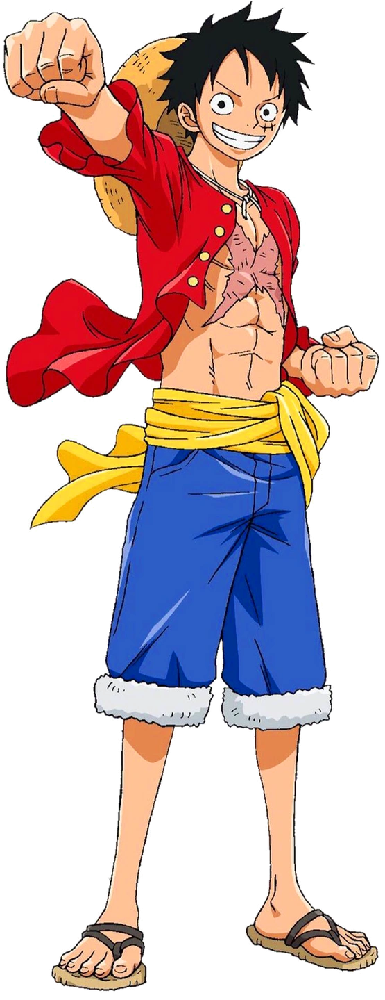
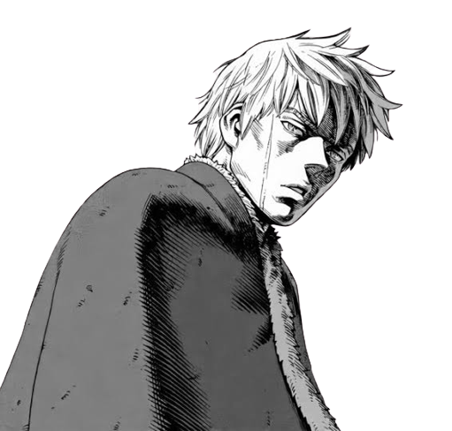
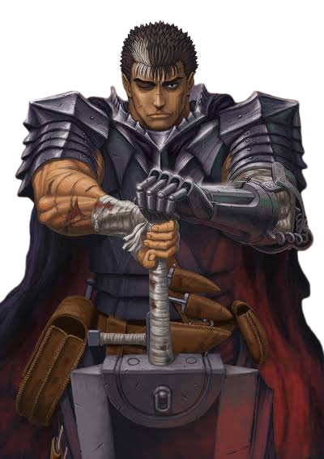

Monkey D. Luffy
Anime: One PieceBirthday:: May 5th
Age: 19
Monkey D. Luffy, also known as "Straw Hat Luffy" and commonly as "Straw Hat", is the founder and captain of the increasingly infamous and powerful Straw Hat Pirates, as well as the most powerful of its top fighters. He desires to find the legendary treasure left behind by the late Gol D. Roger and thereby become the Pirate King, which would help facilitate an unknown dream of his that he has told only to Shanks, his brothers, and crew. He believes that being the Pirate King means having the most freedom in the world. Born in Foosha Village, Luffy is the son of Monkey D. Dragon, the leader of the Revolutionary Army, and the grandson of the Marine hero Monkey D. Garp, where their family carries the initial of D. At age 7, Luffy accidentally ate the Gomu Gomu no Mi, which turned his body into rubber. Shanks also gave Luffy the very straw hat that has become Luffy's signature accessory, having gifted it to the boy as part of a promise for them to meet again someday after he became a great pirate. Growing up on Dawn Island under the care of Curly Dadan, Luffy befriended and became sworn brothers of the late "Fire Fist" Portgas D. Ace and Revolutionary Chief-of-Staff Sabo.

Thorfinn
Anime: Vinland SagaBirthday:: February 3rd
Age: 22
Thorfinn Thorsson, is a former warrior of Askeladd's band as well as a former slave on Ketil’s farm, who is currently a trader and adventurer attempting to settle in Vinland. He is the main protagonist of Vinland Saga. He was born in Iceland as the son of Helga and Thors, the most famous Jomsviking warrior until his defection. He is also the brother to Ylva, and is related to the leadership of the Jomsvikings through his mother, who is daughter of the third Cheif, Sigvaldi. He spent more than a decade attempting to take revenge on Askeladd, the man who killed his father, even following him into battle to stay close to him, and grew cold and merciless, killing countless people. After he attacked Canute in a moment of shock and rage for killing Askeladd, the death of whom was Thorfinn's goal for most of his life, Thorfinn was enslaved as a punishment. Four years later he gained his freedom and changed his life.

Guts
Anime: BerserkBirthday:: Unknown
Age: 24
Guts, renowned as the "Black Swordsman", is a former mercenary and branded wanderer who travels the world in a constant internal struggle between pursuing his own ends and upholding his attachments to those dear to him. At one time driven solely by his will to survive, Guts finds purpose in life upon joining the Band of the Falcon, greatly helping in the faction's storied successes during the Hundred-Year War as captain of the band's raiders. He eventually becomes dissatisfied with clinging to Griffith's dream[42] and departs from the band in pursuit of his own.[43] Following the horrors of the Eclipse prompted by Griffith,[44] Guts embarks on a two-year war against the God Hand and apostles, becoming increasingly embittered on his one-track quest for retribution. He in time realizes protecting his regressed lover is more important to him,[10] as well as something he cannot do alone,[45] and thus puts aside his quest for revenge while fostering camaraderie with new companions.